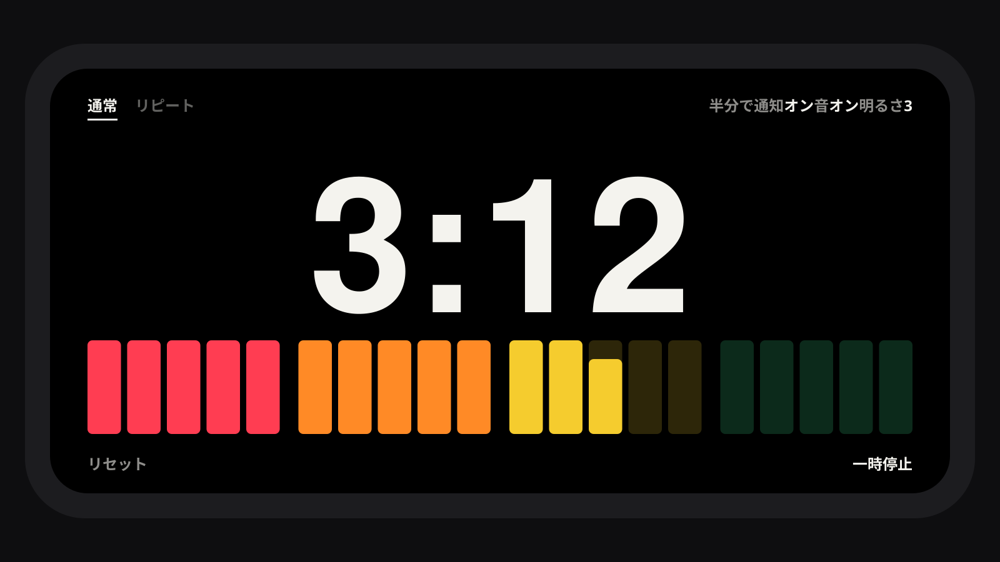

残り時間を、色で見る。
残り時間を 4 色の目盛りで見せるタイマー。数字を読まなくても、あとどれくらいかが目の端で分かる。
ログインは要りません。スマートフォンは横向きがおすすめです。

目を上げれば、分かるように。
- 4 色の目盛り
- 緑から赤へ、残りが減るほど目盛りが消えていく。
- 作業と休憩をくり返す
- 作業と休憩の長さと回数を決めて、まとめて計れる。
あと何分か、ひと目で。
残り時間を 4 色の目盛りで見せるタイマー。数字を読まなくても、あとどれくらいかが目の端で分かる。
ログインは要りません。スマートフォンは横向きがおすすめです。
